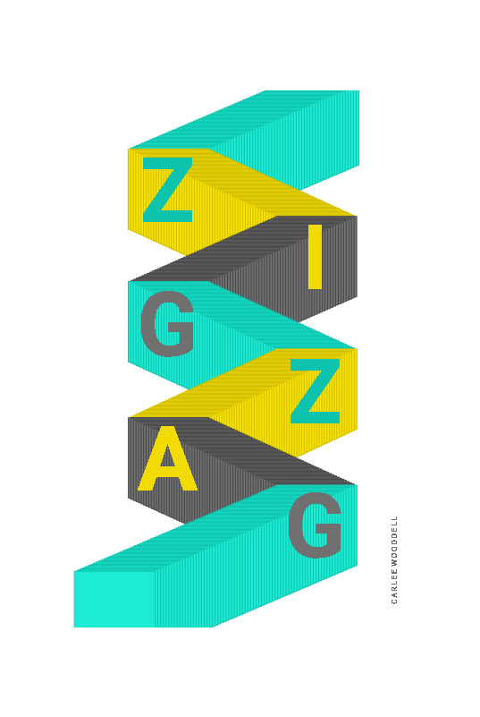

Moving Responsive Posters
Project Info
Q&A
¿Qué haces ahora?
Moon: Soy diseñadora gráfica, artista visual y educadora de diseño. Este verano, impartí un curso de diseño gráfico en el programa Cortona de la Universidad de Georgia en Italia, presentando algunos conceptos básicos de p5.js. Este otoño, planeo enseñar y estudiar plataformas digitales en UGA.
¿Cómo empezaste con p5.js?
Mi ex colega, Xin Xin, me invitó a Processing Community Day en LA en enero de 2019. Me ayudaron con las herramientas y la lógica de p5.js. Fue una excelente experiencia de enseñanza y aprendizaje.
¿Cómo usaste p5.js en este proyecto?
Seguimos tutoriales básicos, los videos de Daniel en YouTube, y Referencia en el sitio web p5.js.
¿Cuál es tu función favorita de p5.js?
Mi función favorita está relacionada con type y transformation: rotate(). Pude usar y enseñar esta herramienta para visualizar varias ideas sobre el tiempo en movimiento.
¿Enfrentó algún desafío al trabajar en este proyecto? Si es así, ¿cómo los superaste?
Para mí, un principiante, fue un desafío comprender la estructura general de p5.js y cómo funciona el código en general. Tuve que repetir los conceptos básicos de p5.js un par de veces, y luego dibujé un cuadro para memorizar y enseñar la forma en que entendí la estructura y el código de p5.js con fuertes restricciones que configuré. Fue una excelente experiencia de enseñanza y aprendizaje.
¿Qué es algo cool que deberíamos explorar?
Echa un vistazo a Design Triennale en Milán, Italia.
¿En dónde se puede aprender más sobre ti?
moonjang.com
@borderrider (Instagram)